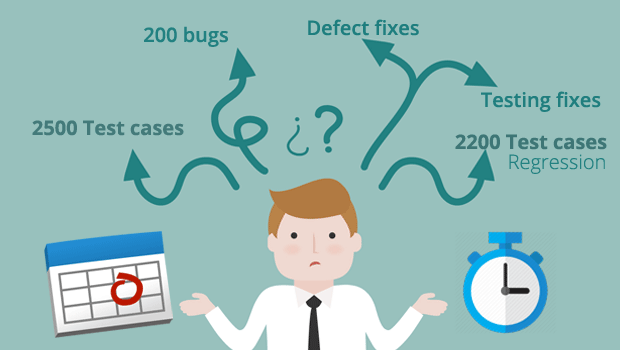

- WHY SHOULD I GET MY HANDS DIRTY WITH CODE -

You need to be a coder to be a tester. Do you hear this a lot?
If you do, trust me you are not alone and i can tell you a perfectly reasonable explaination for this statement to make sense.
As a tester your life revolves around a lot of stuff that you end up doing repeatedly.
And when you end up testing the same scenarios to be tested on a regular basis, over and over again, repititiveness makes your life and job boring.
Guess what!! we have a solution. That would be automating your tests.
Why would i automate my tests , isn't that tough???
I can give you one other good reason to learn coding. If you are a manual tester, have you ever thought what's it really that you are testing? Its all a coded application
developed by a developer following the business requirement document.
Have you ever felt, i need more than this. Then this is what you were missing. If you learn to code, all your work will start to make more sense.
You will never ever feel less than a developer who is the real father of the application, if you start automation testing.
Where do i start???
If you feel initimidated by seeing a long piece of code,
i can guarantee you, it really isn't as bad as you think it is.
A big part of automating your tests includes coding.
One and the only way to learn coding is to start coding. Imagine you want to fly a plane and
you know all about the mechanics of the flight.
But you cannot really claim to be a pilot unless and until you have been in a cockpit..
Get yourself aquainted with atleast one programming language
and principles of OOPS (Object Oriented Programming).
If you get your hands dirty with code once, learning automation should'nt be much trouble.
I started of with java as i had intentions to learn automation testing tool Selenium Webdriver.
And it did pair really well for me.
Once you know the basics of Object Oriented Programming,
your automated test scripts will always maintain good code quality which meets the industry demands.
As you get yourself used to seeing codes, trust me nothing is really that bad.
Learn to code......Learn to breath!!!